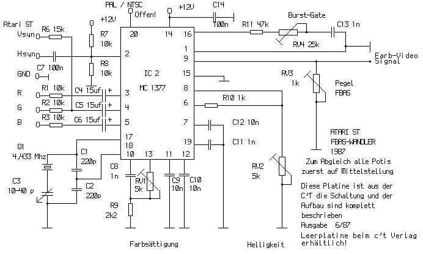

|
|
18.10 RGB / FBAS-Wandler
RGB/FBAS-Wandler für ATARI ST
Nach dem sich viele Leute einen ST Computer zugelegt haben sollte
man sich eventuell Gedanken über farbige Bilder machen. Da die
ST's meist mit einem Monochrome Monitor gekauft werden ist es nicht
besonders einfach Farbprogramme laufen zu lassen. Die sogenannten
Farbemulatoren die sich so im Umlauf befinden sind auch nicht das
gelbe vom Ei, sie bringen eher Nach- als Vorteile mit sich. Vorteile
bietet der 520STM mit seinem eingebautem HF-Modulator. Doch dieser hat
leider auch nur den halben Speicher. (512K) Besitzer eines TV mit
EURO-SCART haben es da besonders einfach, man muß sich
bloß das dazu passende Kabel kaufen und schon geht es los. Nun
gibt es ja noch die Möglichkeit einen HF-Modulator zu kaufen.
Leider sind diese "Zusätze" leider nicht gerade billig
und oft lässt auch die Bildqualität sehr zu wünschen
übrig !
Manche bringen es gerade mal so auf C64er Qualität. Das es
Natürlich auch anders geht ist keine Frage. Leser der c't werden
die Schaltung kennen oder schon gebaut haben. In der c't SPECIAL 3/88
ist der Wandler nochmals genaustens Beschrieben mit Layout und
Schaltplan, die fertige Platine gibt es im Platinenversand der c't und
kostet 22 DM. Die anderen Bauteile kommen so in etwa auf 20 DM.
Kernstück der Schaltung ist der MC 1377 von Motorola, Kostenpunkt
ca. 7 DM Er beinhaltet einen kompletten RGB/Fbas-Wandler der extern
nur mit sehr wenigen passiven Bauelementen beschaltet werden
muß. Es wird somit möglich OHNE Eingriff in den Rechner
Farbbilder auf einem TV darzustellen (Über Zusätzlichen
HF-Modulator) d.h die Schaltung liefert ein komplettes Farb-Video
Signal welches zum Ansteuern von Videorecordern oder eines
Monitor/TV's mit sogenantem Fbas Eingang genügt. (Video Chinch)
Benutzt man nur das PAL/Fbas-Signal ist die Bildqualität
relativ gut RGB Monitorbenutzer werden an der Bildqualität zwar
zu meckern haben, aber deshalb haben sie ja einen EXTRA-Monitor :-)
Wie Funktioniert es:
 Abbildung 1 - RGB / FBAS-Wandler
Sollte das Bild nur zur Hälfte sichtbar sein oder etwas
verzerrt sollte ein 50/60Hz Umschaltprogramm auf dem Rechner
mitgebootet werden. Ich habe diese Schaltung als besonders
"Nachbaufreundlich" empfunden da Sie auch auf Anhieb
einwandfrei funktioniert hat, somit sollte es möglich sein das es
auch Leute nachbauen können die etwas weniger mit Elektronik zu
tun haben. Es ist ausserdem auch die anscheinend billigste
Lösung, der Kostenaufwand für alle Teile
einschließlich Platine hält sich stark in Grenzen.
Es sollte hier lediglich auf eine Lowcost-Möglichkeit
hingewiesen werden.
Grundlagen aus der c't
|
|
|